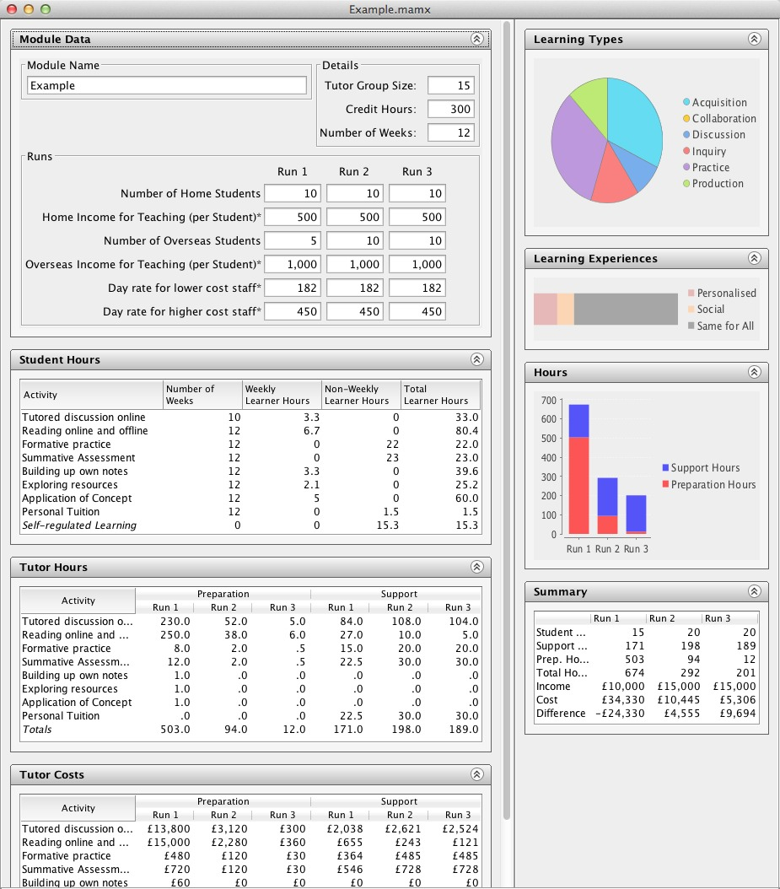

The Course Resource Appraisal Model is a digital design tool that helps academics developing a module to construct a plan for improved learning benefits, and controlled teaching costs. The intended end users are programme/module leaders who are interested especially in costing the move from traditional to blended or online courses. The tool focuses on the costs linked to staff and student time, and the benefits linked to the types of learning and teaching. One of its principal advantages is that it enables innovators to plan and understand the relationship between the expected learning benefits and the likely teaching costs. Phase 1 of the project sets out to develop this tool as a stand-alone online product for use in all IOE departments.
A prototype version of the tool (known as the CRAM tool) is now available for user evaluation purposes. To launch the CRAM Tool, click on the ‘Launch’ button below. Alternatively, you can download a stand-alone Macintosh or Windows version of the tool. Both require the current version of Java installed on your system. The current version of the CRAM tool does not include any functionality to undo user edits or to successfully cancel changes made in dialogue boxes. We have provided an example module if you don’t want to start from scratch.
To report an issue or suggest an enhancement, use the issues list.
(Build @revision@ on @date@)
We recommend using a Firefox browser on Apple Macintosh due to recent changes that Apple have introduced into the Safari browser. You may also encounter the following problems.
If you see a dialogue box that displays the message ‘Application Blocked by
Security Settings’, then you will need to adjust the security settings
of your Java control panel by following these instructions.
We recommend that you add http://web.lkldev.ioe.ac.uk/ to the
Exception Site List,
instead of adjusting the Security Level. PLEASE NOTE, Java will present
you with a Security Warning that requires you to accept the risk of running
this application. If you do not wish to adjust your Java security settings,
we recommend that you download the stand-alone version of the tool, as
mentioned earlier.
If you see a dialog box that displays the message ‘“launch.jnlp” can't be opened because it is from an unidentified developer’, you will need to adjust the security settings on your Mac. On Mac OS X 10.9 (‘Mavericks’) and Mac OS X 10.8 (‘Snow Leopard’) Apple has changed its security model to only support applications from the Mac App Store and identified developers. You may adjust these settings by following the instructions on Apple’s web site.